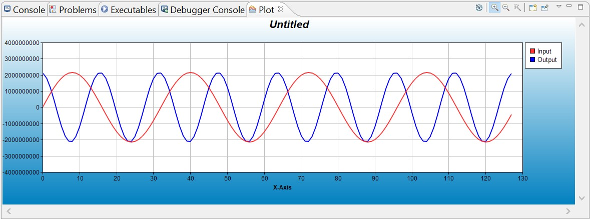

This example demonstrates usage of ASRC in TDM8 mode. For ASRC in TDM8 mode, four ASRC instances are used (ASRC0/1/2/3).
SPORT0A is configured as input sport and SPORT0B is configured as output sport.
PCG A is configured for providing clock and frame sync to SPORT0A(input) & ASRC.
PCG B is configured for providing clock and frame Sync to SPORT0B(output) & ASRC.
Input Buffer is filled with Sine wave for the Left and Right Channels and the input rate is upconverted or
downconverted depending on the macro UPCONVERSION by a factor of RATIO(2 by default).
To observe the results, application needs to plot the channels.
After running the example, The normal word addresses of the input and output buffer will be printed on console window.
To observe the two channels (input vs output) , use the following plot configurations : Please note that, the plot needs to be configured after pausing the execution. Upon getting the output on the console,
pause the application and then configure plot.
- Address : Start address of InputBuffer/OutputBuffer. InputBuffer/OutputBuffer can be searched and selected from the addess options as well.
- Count : (BUFF_SIZE/8)
Stride : 8,
Offset : 0(For 1st channel)
1(For 2nd channel)
2(For 3nd channel)
and so on
Please refer to the following image for demo plot.
